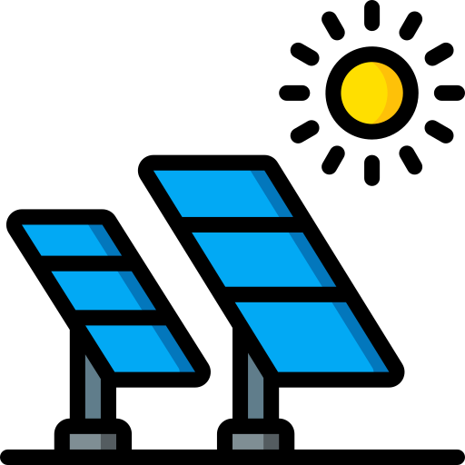
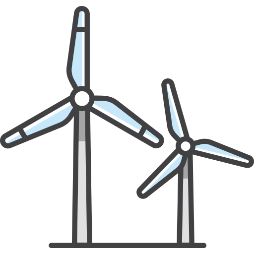
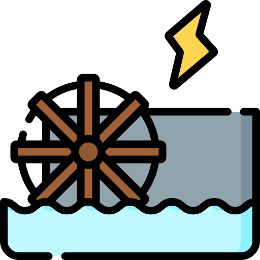
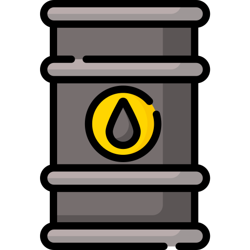

Energies renouvelables
Energies fossibles
Énergie Solaire
L'énergie solaire est produite en capturant la lumière et la chaleur du soleil à l'aide de technologies telles que les panneaux solaires photovoltaïques (qui convertissent la lumière du soleil en électricité) et les panneaux solaires thermiques (qui capturent la chaleur du soleil pour des applications comme le chauffage de l'eau).

Énergie Éolienne
L'énergie éolienne est générée en utilisant la force du vent pour faire tourner des éoliennes. Ces éoliennes convertissent l'énergie cinétique du vent en électricité. L'énergie éolienne est de plus en plus utilisée dans le monde entier, que ce soit sous forme de parcs éoliens terrestres ou de parcs éoliens offshore en mer.

Énergie Hydraulique (Hydroélectricité)
L'énergie hydraulique est produite en exploitant l'énergie cinétique de l'eau en mouvement, généralement à partir de rivières ou de chutes d'eau. Les centrales hydroélectriques utilisent des turbines pour convertir l'énergie de l'eau en électricité. Il existe également des technologies émergentes, comme les marées et les courants océaniques, qui exploitent l'énergie des mouvements de l'eau dans les océans.

Le charbon
Le pétrole et le gaz
L’enfouissement rapide d'arbres et de débris végétaux au sein de certains bassins sédimentaires provoque la lente et progressive formation du charbon, avec des passages successifs par la tourbe, le lignite, la houille et enfin l’anthracite, qui est du carbone presque pur. La plupart des charbons exploitables se sont formés au Carbonifère (il y a 360 à 300 millions d'années) ou plus récemment, à l'ère Tertiaire. Exploité depuis des siècles, le charbon est extrait dans des mines sous terre ou à ciel ouvert. Il est l’un des facteurs ayant contribué à la première révolution industrielle durant le XIXe siècle.
La genèse des hydrocarbures est un processus qui s’étend aussi sur des millions d’années. Elle débute par l'accumulation de matière organique dans les sédiments de milieux peu oxygénés et calmes, comme le fond de mers fermées ou de lacs. Sous l'action de bactéries, elles se transforment en boues puis, sous l'effet de l'enfouissement progressif, en « roches-mères ». Les hydrocarbures (pétrole et gaz) s’y forment puis entament une migration vers la surface pour se concentrer, si les conditions s’y prêtent, dans des « roches-réservoirs », dans des volumes fermés (pièges) constituant des gisements.